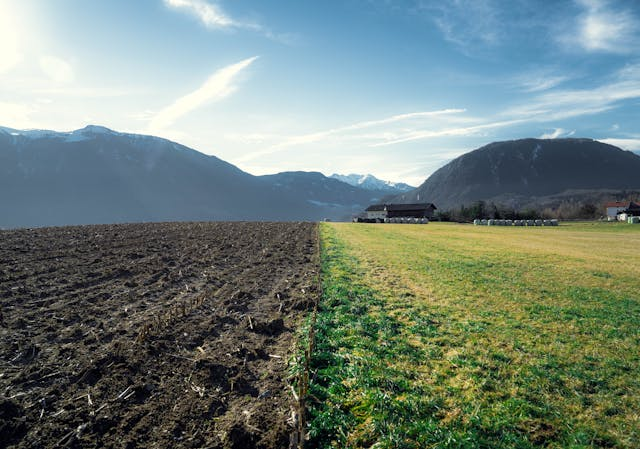
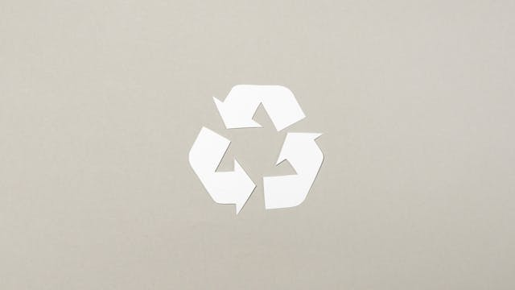
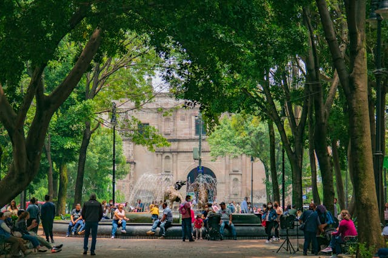
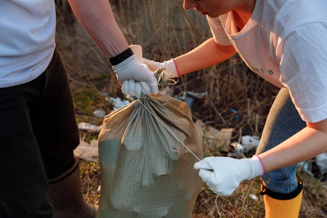
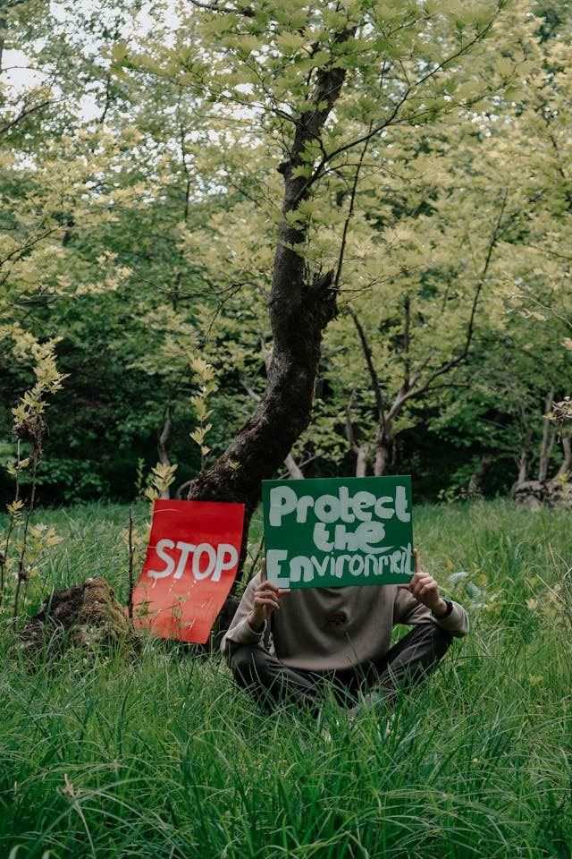
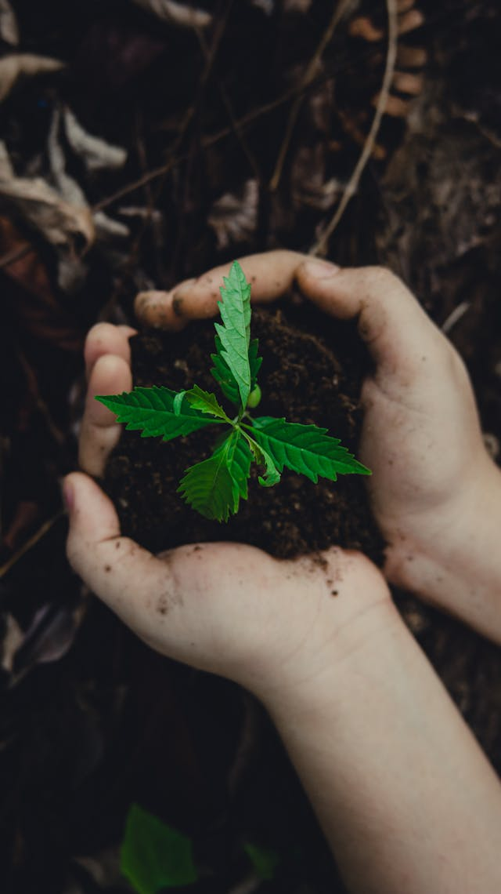

How You Can Protect Life on Land
Taking action individually for protect the life on land is nessasry.
Why Action Matters
Knowledge about the biodiversity crisis, deforestation, and land degradation is important but knowledge alone does not save a species or restore a forest. Action does. SDG 15 is not just a target for governments and scientists; it is a call to every individual, community, and organisation to change their relationship with the natural world.
The good news is that individual actions, when multiplied across millions of people, have a real and measurable impact. Research consistently shows that behaviour change at scale particularly in high-consumption societies is one of the fastest routes to reducing environmental pressure on ecosystems. Guo (2025) notes that citizen engagement and public participation are among the key indicators tracked in SDG 15 monitoring, reflecting the UN's recognition that governments cannot achieve these goals alone

Reduce, Reuse, Recycle

The demand for products like timber, palm oil, beef, and soy is a direct driver of deforestation and land degradation. By reducing what you consume, choosing second-hand or sustainably certified products, and recycling materials, you reduce the pressure on the land systems that produce those goods.
- Switch to recycled paper and FSC-certified products
- Illegal hunting and wildlife trade
- Avoid single-use plastics that end up in natural habitats
- Compost food waste to reduce landfill pressure and create soil-enriching compost
- Choose plant-based meals more often even one day a week makes a difference
Even if you live in a city, you can support local biodiversity. Growing native plants on balconies or in gardens provides food and shelter for insects and birds. Avoiding pesticides protects pollinators. Installing a bird feeder or bat box contributes to urban wildlife corridors.
Actions at University
Join or Start a Conservation Club
Many universities have environmental or conservation societies that organise tree planting, habitat restoration, and awareness campaigns. If yours does not, the NatureGuard website itself is a demonstration of how students can create platforms to inspire action.
Advocate for Sustainable Campus Policies
Push your student union and university management to adopt sustainable procurement policies — choosing sustainably sourced paper, reducing single-use packaging in canteens, and offsetting carbon through reforestation partnerships.
Use Your Degree
Whatever you study, you can integrate sustainability into your future career. Engineers can design infrastructure that minimises land disturbance. Business students can model sustainable supply chains. Computer scientists can develop apps that help communities monitor deforestation in real time.

Actions in Your Community

Participate in Citizen Science
Programmes like iNaturalist allow ordinary people to record and photograph wildlife, contributing to global biodiversity monitoring databases. This data is used by researchers and policymakers to track species populations and identify areas needing protection.
Support Local Conservation Organisations
Volunteering with local wildlife trusts, national parks, or community green spaces directly contributes to habitat restoration and species monitoring. In Sri Lanka, organisations such as the Wildlife and Nature Protection Society (WNPS) and the Field Ornithology Group of Sri Lanka (FOGSL) actively welcome student volunteers.
Responsible Tourism
When visiting natural areas, stick to marked trails, do not disturb wildlife, support locally owned eco-tourism businesses, and report any evidence of illegal activity such as poaching or unauthorised logging. Chango-Cañaveral et al. (2025) specifically identify responsible tourism as a critical factor in either protecting or damaging terrestrial ecosystems, depending on how it is managed.
Barriers to Action and How to Overcome Them

Many people want to act but feel overwhelmed, guilty, or powerless. Here are the most common barriers and practical ways to address them
'My actions are too small to matter'
Individual actions matter both directly and indirectly. Directly, they reduce demand. Indirectly, they signal to businesses and policymakers that consumers care about sustainability. Market and policy changes have consistently followed shifts in consumer behaviour
'It is too expensive to be sustainable'
Many sustainable choices are free or cheaper — eating less meat, buying second-hand, using the library instead of buying new books, cycling instead of driving. Start with the free or low-cost changes and build from there.
'I do not know enough to act'
You do not need to be an expert to take action. Reeya et al. (2024) emphasise that community-based restoration programmes are specifically designed to involve participants with no prior environmental knowledge — the skills are taught, and the act of participation is itself educational.
The Bigger Picture
SDG 15 has 12 specific targets, ranging from protecting ecosystems and halting biodiversity loss to combating poaching and integrating biodiversity values into national policy. Individual action feeds into this framework at multiple levels.
- Consumer choices change market incentives, pushing businesses toward sustainable sourcing
- Citizen science data directly informs conservation policy and species protection lists
- Volunteer restoration work contributes measurably to land degradation neutrality targets
- Student advocacy shapes institutional policy at universities, local councils, and beyond
The SDG framework was designed to be universal applicable to every country, city, organisation, and individual. Your actions are not separate from the goal; they are part of it.

Conclusion
Protecting life on land is one of the most urgent challenges of our generation. It requires action at every scale international treaties, national laws, community projects, and daily individual choices. As a student in 2026, you are uniquely positioned: you have access to information, to networks, and to the energy and creativity needed to make change happen. Start with one action this week. Then another. The planet cannot wait, but neither can your generation and the two are inseparable.